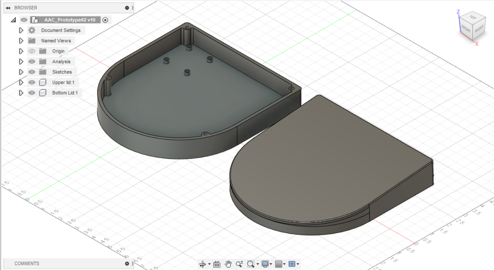

AAC Internship - Fablab
9th MAY 2023
Initially the interns were tasked with performing their own research and learning about various AAC devices available in the market and to come up with a low to mid tech AAC device.
- Learn about AAC devices.
- Generated ideas of a prototype AAC device.
- Single button AAC device capable of recording the required audio and play it back on demand.
- Simple design to not overstimulate the users.
- Some form of force feedback on activation.
- Create a presentation on the prototype.
The prototype is based on the existing design of the BIGmack communictation device:

10th MAY 2023
On the second day, the inters were requested to present their ideas infront of a panel of industry experts.
- Presented the idea to the CEO of Evocube Technologies and the Faculty Incharge of Fablab.
- Valuable feedback was generated through constant communication on the idea:
- Since the device is already in the market, was told to make the device innovative and different.
- Take pointers from the communities that the product is marketed to and to see ideas and features through the eyes of the user.
- After the presentation, the inters were tasked with developing a basic sketch/design of the device using any industry standard modelling software.
- Downloaded Autodesk Fusion360 and started on developing a basic prototype.
11th MAY 2023
The interns were focused on learning the fundamental tools in Fusion360 needed to construct a basic design of the device.
- With prior knowledge on designing in Fusion360, the day was spent sketching a design on paper before modelling it on Fusion360.
- Multiple view images of the BIGmack communication device helped finalize the design for the prototype device I was tasked to produce.
- Finished the day off by completing the design of the bottom-lid of the device in Fusion360.
The design was a simple to manufacture shape that would intrigue the user.
12th MAY 2023
Today was the deadline for presenting the design to the Faculty Incharge.
- The top-lid of the device was modelled before deadline and presented.
- Was told to produce a stl file of the sketchs produced for 3d printing.
The design was as follows:

16th MAY 2023 - 18th MAY 2023
The premilinary design for the device underwent further development after receiving valuable insight from the previous class.
- Major changes were made to the upper-lid, now having a five degree slope to make it more visualy pleasing.
- The standoffs were redesigned making much more area for threaded inserts to be added.
The finalised design was as follows:

19th MAY 2023
A GoogleMeet was scheduled with an Alumni to teach us the basics of the electronics side of the device.
- We were provided with links and relevant resources to prototype our device using arduinos.
- We were given valuable tips on how to go about making the device.
22nd MAY 2023
With the product design stage nearly finished, focus was moved to the electronic side of the product.
- Aquired an ISD1820 based audio recorder module which would be suitable for my design as it it compact and can be modified easily for the required device.
- Further replacement modules were also researched on, eg: ISD1760.
It was learned that the speakers procured with the voice recorder module provided insufficient volume and depth so it was decided to use an amp along with a speaker with a bigger driver.
- Multiple amps were researched on and shortlisted down to two.
- PAM8406 Digital Amplifier Module With Volume Control Potentiometer 5W - 2 Stereo
- LM386 Audio Amplifier Module
23rd MAY 2023
Researched online about batteries that can be used with the device and how to regulate its voltage to a safe level for daily use inside the product
- A 2s liPo 1000mAh battery was selected which can provide 7.4v which can further be regulated down to a safe voltage of 5v using a voltage regulator based on an LM7805 IC - 5V Positive Voltage Regulator IC
Started measuring and designing the standoffs for these modules into the design